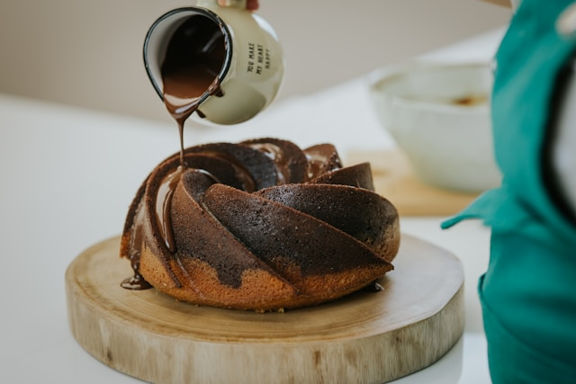

Receita de bolo de chocolate

Ingredientes
Massa
- 3 Ovos
- 2 xicaras(Chá) de farinha
- 1/2 xicara(Chá) de óleo
- 1 pitada de Sal
- 1 xicara(chá) e 1/2 de açucar
- 1 xicara(chá) de achocolatado em pó de sua preferencia
- 1 colher(sopa) de fermento em pó
- 1 xicara(chá)
Cobertura
- 4 colheres(sopa) de leite
- 1 colher(sopa) de manteiga
- 1/2 xicara(Chá) de achocolatado em pó de sua preferencia
- 1 xícara (chá) de açúcar
modo de preparo
massa
- Em um liquidificador, bata os ovos, o açúcar, o óleo, o achocolatado e a farinha de trigo.
- Despeje a massa em uma tigela e adicione a água quente e o fermento, misturando bem
- Despeje a massa em uma forma untada e asse em forno médio-alto (200° C), preaquecido, por 40 minutos.
- Desenforme ainda quente
Cobertura
- Em uma panela, leve todos os ingredientes ao fogo até levantar fervura.
- Despeje ainda quente em cima do bolo.
made and developed by vitor nascimento